Color Theory Article
Color has a large impact on branding and marketing, particularly when it comes to websites. The colors used are often the first impression a consumer has of a company and branding is integral to that impact. The old saying of the first impression being the most important rings true for designers and the reaction of the consumer can prove how successful, or not, the website's color scheme is.
As a case study, Starbucks and Dunkin' have two very different color schemes, each implementing different aspects of color theory. This is compounded by the fact that they are competing brands. Having opposing color schemes allows for customers to easily differentiate between the two with barely a glance.
Beginning with Starbucks, their main color is a deep green. However at the top of their page, this color is used more like an accent over top of the images of the seasonal drink, which is pink. These two colors provide a good contrast since they are complementary, a combination that is good for drawing attention. The colors used here highlight that this drink is a seasonal one and not available year round, potentially initiating a sense of urgency. The bright pink is cheery and fitting for the summer season. The neutral tone on the right underneath the green text allows it to stand out while sectioning it off from other drink options.
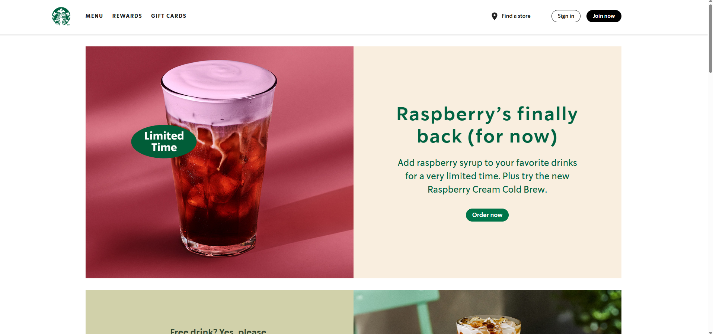Further down the same page, the dominant color becomes various shades, tints, and tones of the focal green. This allows the dark green to be used as overlaying text and be easy to read. Green is also known to be a calming color, reminiscent of nature, so after the excitement of the seasonal drink at the top of the page, the monochrome color palette provides a sense of stability and peace.
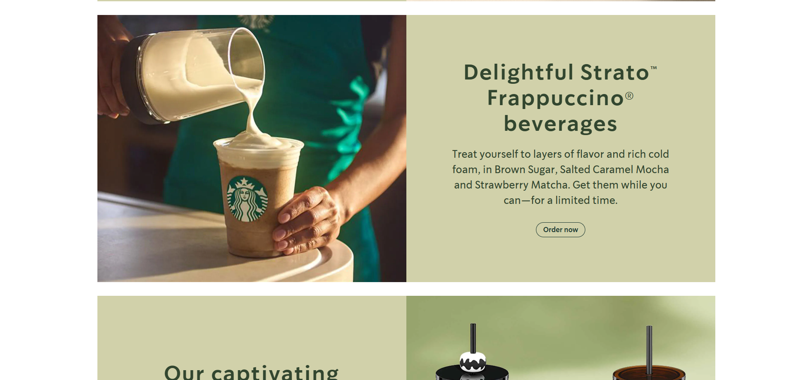Continuing to the featured page, complementary colors are on display again, with the deep green used in the logo on the left and the bright pink and orange colors of the seasonal refreshers on the right. The contrast of the two further brightens the color of the drinks and lets them be the focus.
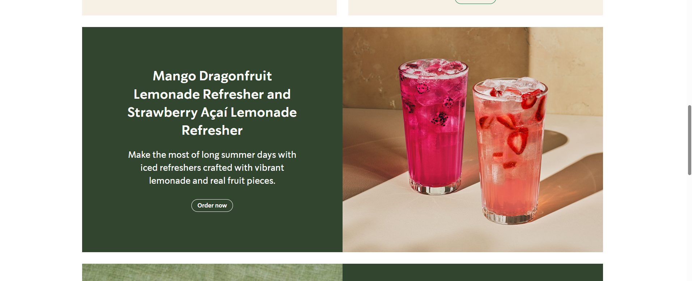Over on the menu, the color scheme takes a back seat to allow for an easier, and less visually busy, selection for the user. The most significant place color is used is the bar across the bottom in the deep green of the logo which highlights the ability to order online and pick up at a Starbucks of your choice.
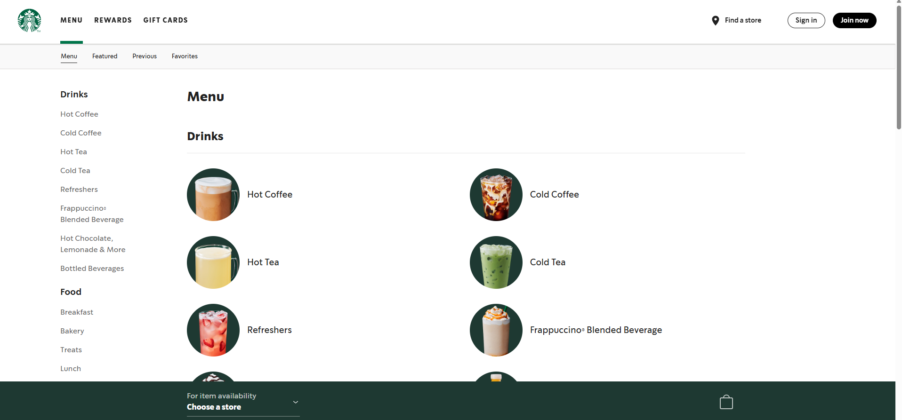The weards page continues with the minimalist and lighter tinted colors as background to allow for an easier reading experience on a more text-heavy page. The color green is still dominant, keeping the brand consistent.
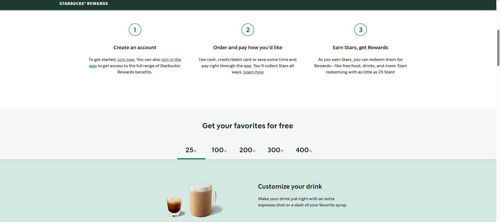Interesting to note is that on Starbucks' gift card page, every single gift card has a tint, shade, or tone of the brand's identity green as the dominant color. It makes for a pleasing layout of the page and a soothing experience for a customer as they select from among the choices offered.
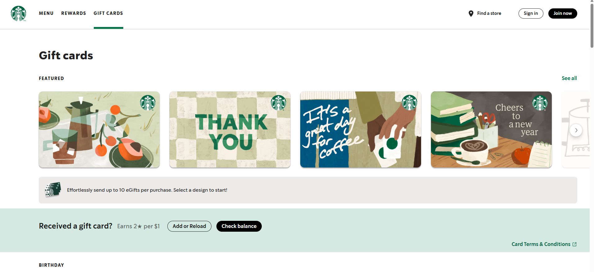By contrast, throughout the whole of Dunkin's website, their dominant branded colors of pink and orange are used as accents over a white background. This results in a lighter feeling page, especially with their refreshers on the front. In a warmer season like summer, the bright colors are almost reminiscent of a pool float, bringing an energetic feeling to the website and potential customer.
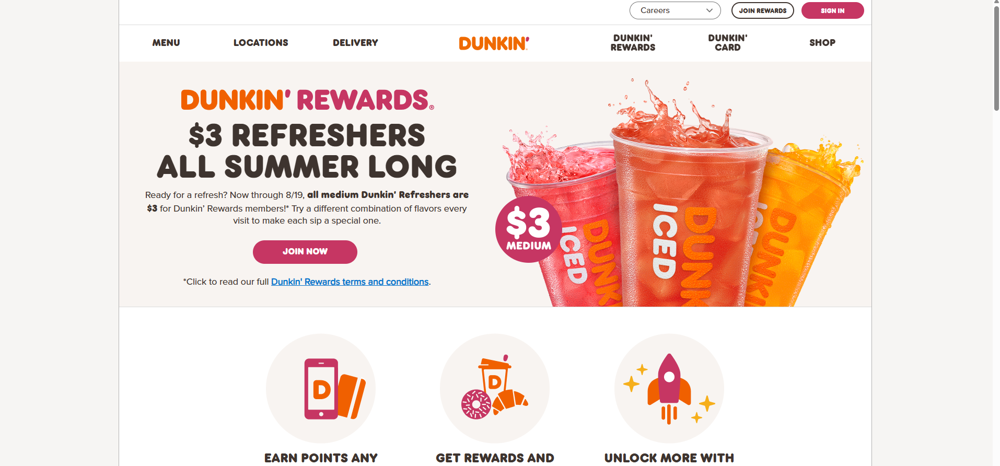This continues while scrolling down the page where Dunkin' presents other food options and more. Using the main colors more as an accent is also likely easier on the eyes for the customer than staring down a bright pink or orange screen. It also makes accessibility simpler as well.
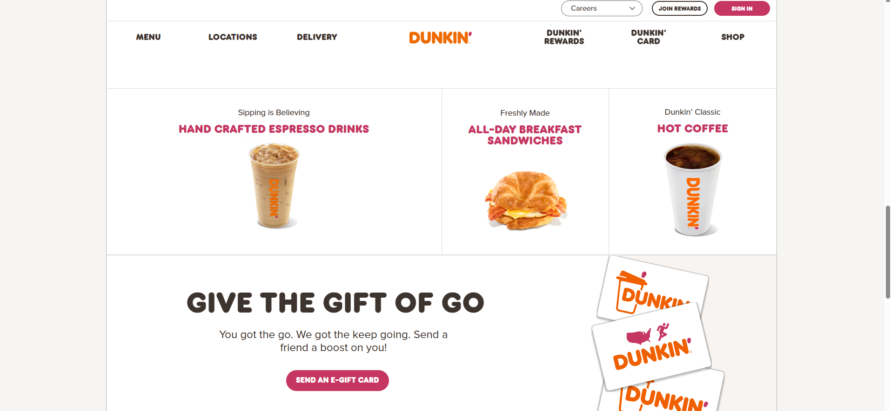In contrast to Starbucks' website, Dunkin's menu begins as a drop down instead of immediately going to a separate page. This consolidates the decision process for the customer while still maintaining the orange accents as a focal point on each beverage and food option.
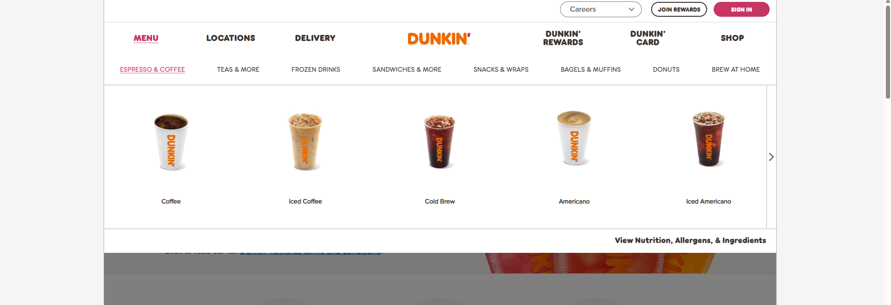After selecting an option, the webpage continues to be predominantly white, though the simplified background makes walking through the text-heavy selection process simpler.
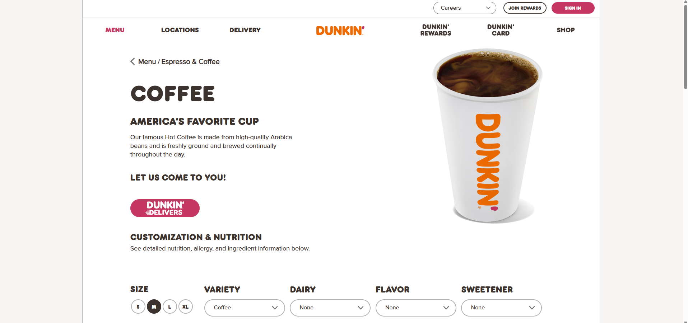The brand colors play a more dominant role on the rewards page with the seasonal drinks taking a seat at the top of the page. The bright energy fits the season well and fits into the playful color scheme.
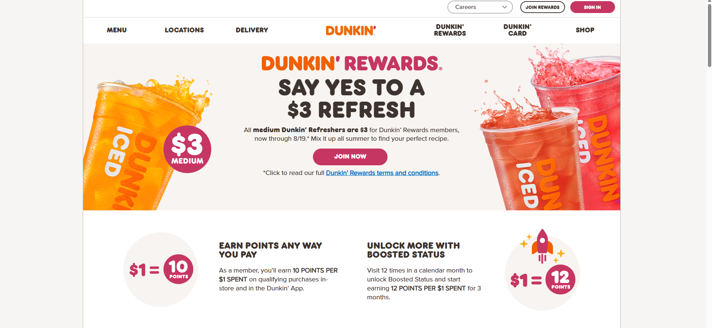In comparison to Starbucks' card page, Dunkin's is much busier while having less color. There is a clear focal point with text but the way Starbucks used the branding green color directed the customer's eye in a smoother way.
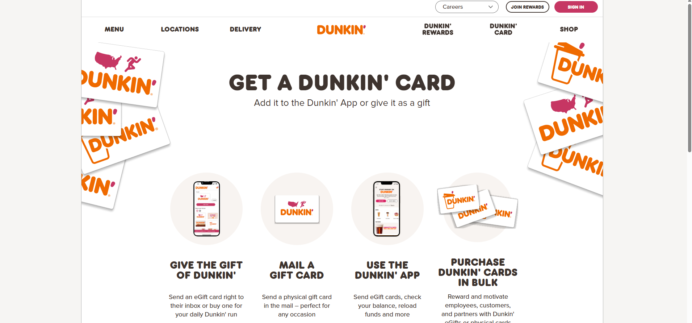Overall, the two websites are successful in what they do. One experience being calmer overall than the other simply because of the color selected as an accent and background.